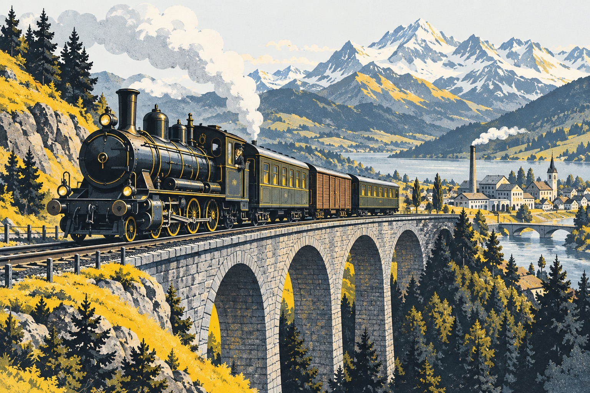

DER KURZE WISSENSCHECK
Bereit für die
nächste Schicht?
8 Fragen zur Industrialisierung der Schweiz.
Etwa 5 Minuten · kein Zeitdruck · eine Antwort pro Frage

Mit der Klasse spielen
Jede richtige Antwort gibt einen Punkt. Nach jeder Frage erfährst du warum.
Grundlage des Quiz
Erstellt aus «Text Industrialisierung» (S. 1, 3 und 5) und «Notizseiten für Präsentation Industralisierung» (Karten zu Verkehrsverbindungen um 1860 und Eisenbahnlinien vor 1914, S. 1–2). Die Karten ergänzen Frage 4 zum Ausbau der Eisenbahn. Die Originalmaterialien werden hier nicht reproduziert. Die zusätzlichen Bilder sind KI-generierte, historisch inspirierte Illustrationen und keine historischen Bildquellen.
Das Quiz überprüft Grundwissen und Zusammenhänge; es ist keine benotete Prüfung. Ohne Klassenbeitritt bleiben Antworten in diesem Browser. Im Klassenmodus werden Kürzel, Antworten und Zeitpunkte zentral bei Cloudflare gespeichert und können von der Lehrperson ausgewertet und gelöscht werden. Der Wiederaufnahme-Zugang bleibt für diesen Tab gespeichert.